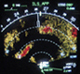

Navigation Display Symbols
Table 5
| MISCELLANEOUS | |||
| SYMBOL | NAME | MODE | DEFINITION |
| Cross Track Error (G) |
NAV ARC PLAN |
Displays left or right lateral deviation from the active leg of the flight plan in NM. Not present when PPOS is the FROM waypoint. | |
| Weather Radar Returns |
ILS/VOR NAV ARC |
Areas of the highest intensity display in red, lesser intensity in amber, and lowest intensity green. Turbulence is displayed in magenta. | |
| Predictive Windshear (Black, R, A) |
ILS/VOR NAV ARC |
Indicates windshear area as a black and red icon and two amber radial lines. | |
|  | EGPWS (R, Y, G, Black, M) |
ILS VOR NAV ARC |
Indicates threatening terrain, with red being the most threatening, followed by yellow then green. Black indicates terrain is 2000 feet below airplane and/or within 400 feet of the runway elevation of the nearest airport. Magenta indicates terrain data is unavailable. |
| TCAS | |||
 |
TCAS RA Traffic (R) |
ILS VOR NAV ARC |
With TA/RA or TFC selected, displays RA intruder within 15 to 35 seconds of closest point of approach (CPA). Inhibited below 1100 feet AGL on climb and 900 feet on descent. Range must be 40 NM or less on some airplanes. |